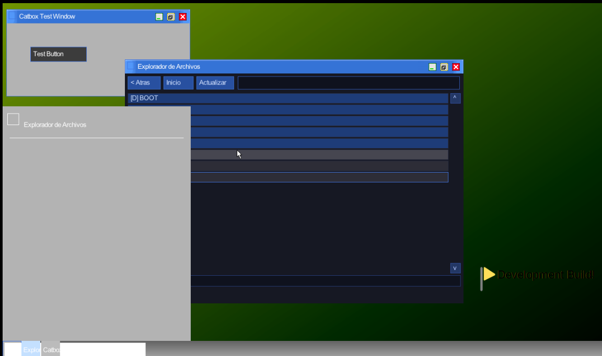
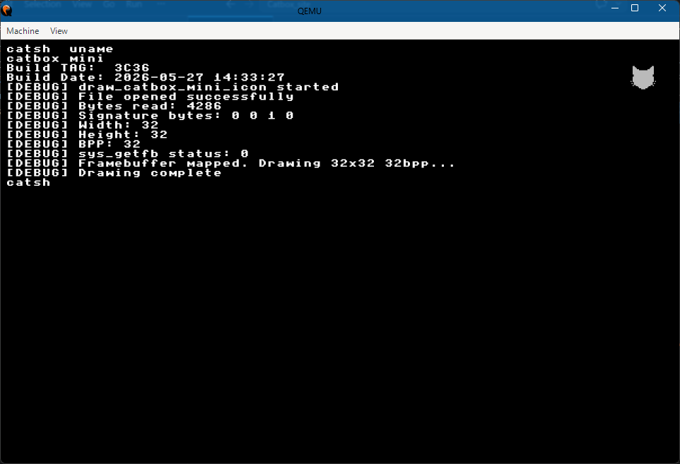
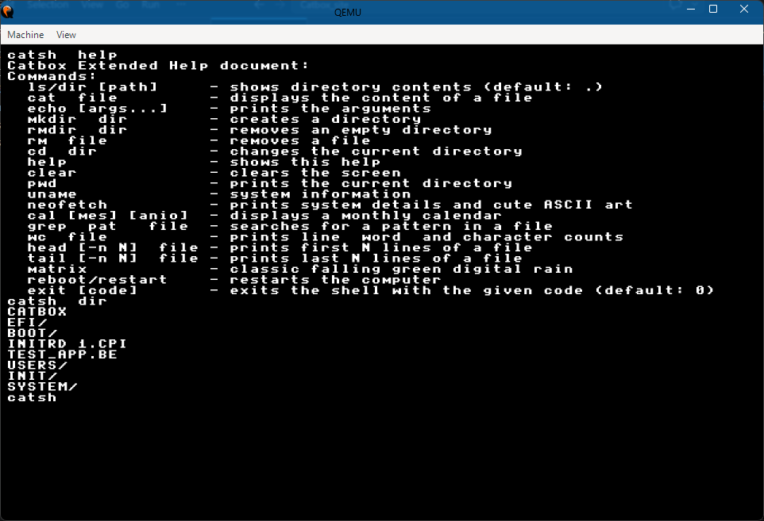

Diseño limpio
Interfaz intuitiva con iconos simples y escritorio minimalista.
Un sistema operativo Basico y ligero.

Interfaz intuitiva con iconos simples y escritorio minimalista.
Carga ágil, consumo reducido de recursos y tiempos de respuesta inmediatos para notebooks y equipos de escritorio viejos.
como es un sistema nuevo actualmente no existe ningun virus "No aun" AVISO esto no quiere decir que este sistema sea indestructible, aun esta en desarrollo.
Espacio de trabajo tanto grafico como basico.
CatBox está pensado para quienes buscan simplicidad sin sacrificar potencia. Desde el primer arranque, cada detalle demuestra que para que un sistema sea bueno no nesecita estar sobrecargado con blotware.
aun no hay una razon para usar este trozo de trapos viejos, usa windows o MATE.
Imágenes reales de la interfaz y el shell de CatBox para que veas el estilo y el flujo de trabajo.

Sistema de shell con prompt claro, accesible y basico.

Terminal compatible con CMD/SH basico.
Escritorio simple y basico, cuidado puede que encuentres bugs de camino.
Descarga la versión alpha y prueba un entorno virtual no uses una PC fisica por favor (QEMU o VirtualBox)
Descarga y explora el interesantemente aburrido para nada basico Catbox.
Descargar IMG